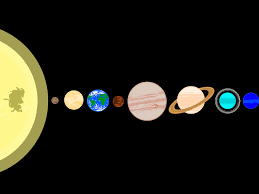

The Milky way is a galaxy amongst many. It is the galaxy our solar system is in. Our galaxy contains many different space entities, including:
There are many planets in the whole entire galaxy. the following list are the planets in our solar system:
click on jupiter, saturn or uranus to learn more about them
There are billions of stars in the milky way. just a few are: